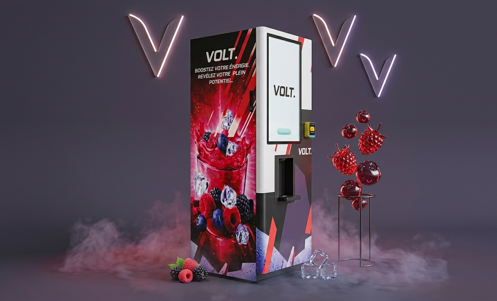

Offrez à vos membres des boissons fonctionnelles en libre accès, sans aucune gestion de votre côté. VOLT. installe, entretient et réapprovisionne une station connectée dans votre salle — vous fidélisez et générez un revenu récurrent.
Un distributeur de boissons nouvelle génération, pensé pour les salles de fitness : zéro contrainte pour vous, un vrai plus pour vos membres.
Chaque membre abonné qui consomme dans votre club contribue à un revenu récurrent — sans investissement de matériel ni gestion de stock de votre part.
Une boisson fonctionnelle saine, accessible en un scan : un service exclusif qui donne à vos membres une raison de plus de revenir s'entraîner chez vous.
Installation, entretien et réapprovisionnement sont gérés par nos équipes. Vous n'avez ni machine à acheter, ni stock à suivre, ni maintenance à prévoir.
Une station connectée et au design soigné qui valorise l'image de votre salle et la place du côté des clubs innovants.

De la prise de contact à la première boisson servie, le déploiement est rapide et géré de bout en bout.
Une station VOLT. autonome et connectée, posée dans votre club. Installation, branchement et mise en service gérés par nos équipes.
Ils scannent leur QR code et obtiennent leur boisson en quelques secondes. Le système gère l'accès, le délai et les droits, tout seul.
Suivi des consommations, état des stocks, abonnés actifs et revenus : tout est centralisé dans votre espace fitness, en temps réel.
Salle de musculation, box de crossfit, wellness center ou centre multisports — la station VOLT. s'installe partout où vos membres ont besoin d'hydratation.
Distributeur de boissons sportives positionné en zone cardio ou à l'entrée. Idéal pour les séances de force, hypertrophie et endurance musculaire.
Machine à boissons adaptée à la haute intensité. Électrolytes et vitamines disponibles entre chaque WOD, sans file d'attente, en 9 secondes.
Fontaine à boissons vitaminées pour les pratiques douces. Hydratation légère et naturelle, sans sucre, adaptée aux séances de mobilité et récupération active.
Borne à boissons électrolytiques pour compenser les pertes en sels minéraux lors des matchs. Service rapide entre deux sets, sans quitter l'espace de jeu.
Station hydratation pour centres bien-être et spas sportifs. Boissons fonctionnelles sans sucre, compatibles avec une clientèle soucieuse de sa santé.
Déploiement multi-stations pour les complexes sportifs avec plusieurs activités. Tableau de bord centralisé, revenus consolidés par espace.
Nous déployons des distributeurs de boissons pour salles de sport dans toutes les régions linguistiques suisses.
Distributeur boissons fitness disponible à Genève, Lausanne, Fribourg, Neuchâtel, Sion, Martigny, Yverdon et dans toutes les agglomérations romandes.
Machine à boissons sportives déployée à Zürich, Bern, Basel, Luzern, St. Gallen, Winterthur, Aarau et dans les grandes villes alémaniques.
Tout ce que vous devez savoir avant d'installer un distributeur de boissons VOLT. dans votre club de fitness.
Rejoignez le réseau VOLT. — déploiement rapide, service clé en main. Parlons de votre salle.
Demander une offre